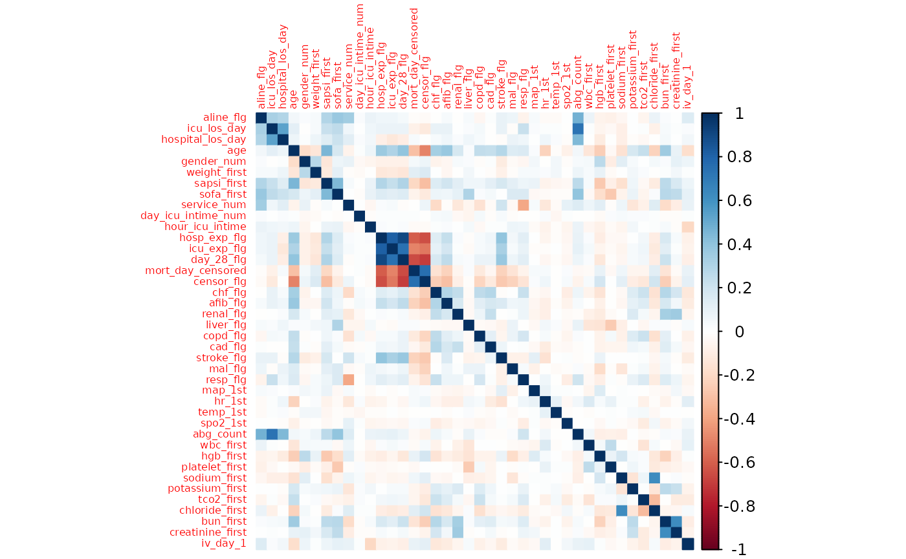

Binary Protected Attributes
TwoGroup.Rmd
library(FairnessTutorial)
library(dplyr)
library(corrplot)
library(randomForest)
library(pROC)
library(SpecsVerification)
data("mimic")Data Preprocessing
Missing Data
# Calculate the number of missing values per column
missing_values <- sapply(mimic, function(x) sum(is.na(x)))
# Calculate the percentage of missing values per column
missing_values_percentage <- sapply(mimic, function(x) sum(is.na(x)) / length(x) * 100)
# Combine the results into a data frame for easy viewing
missing_data_summary <- data.frame(Number_of_Missing_Values = missing_values,
Percentage = missing_values_percentage)
# Print the summary
print(missing_data_summary)
#> Number_of_Missing_Values Percentage
#> aline_flg 0 0.00000000
#> icu_los_day 0 0.00000000
#> hospital_los_day 0 0.00000000
#> age 0 0.00000000
#> gender_num 1 0.05630631
#> weight_first 110 6.19369369
#> bmi 466 26.23873874
#> sapsi_first 85 4.78603604
#> sofa_first 6 0.33783784
#> service_unit 0 0.00000000
#> service_num 0 0.00000000
#> day_icu_intime 0 0.00000000
#> day_icu_intime_num 0 0.00000000
#> hour_icu_intime 0 0.00000000
#> hosp_exp_flg 0 0.00000000
#> icu_exp_flg 0 0.00000000
#> day_28_flg 0 0.00000000
#> mort_day_censored 0 0.00000000
#> censor_flg 0 0.00000000
#> sepsis_flg 0 0.00000000
#> chf_flg 0 0.00000000
#> afib_flg 0 0.00000000
#> renal_flg 0 0.00000000
#> liver_flg 0 0.00000000
#> copd_flg 0 0.00000000
#> cad_flg 0 0.00000000
#> stroke_flg 0 0.00000000
#> mal_flg 0 0.00000000
#> resp_flg 0 0.00000000
#> map_1st 0 0.00000000
#> hr_1st 0 0.00000000
#> temp_1st 3 0.16891892
#> spo2_1st 0 0.00000000
#> abg_count 0 0.00000000
#> wbc_first 8 0.45045045
#> hgb_first 8 0.45045045
#> platelet_first 8 0.45045045
#> sodium_first 5 0.28153153
#> potassium_first 5 0.28153153
#> tco2_first 5 0.28153153
#> chloride_first 5 0.28153153
#> bun_first 5 0.28153153
#> creatinine_first 6 0.33783784
#> po2_first 186 10.47297297
#> pco2_first 186 10.47297297
#> iv_day_1 143 8.05180180
# remove columns with more than 10% missing data and impute the rest with median
# Identify columns with more than 10% missing values
columns_to_remove <- names(missing_values_percentage[missing_values_percentage > 10])
# Remove these columns
mimic <- select(mimic, -one_of(columns_to_remove))
# Impute remaining missing values with median
mimic<- mimic %>% mutate(across(where(~any(is.na(.))), ~ifelse(is.na(.), median(., na.rm = TRUE), .)))
# Check if there are any missing values left
remaining_missing_values <- sum(sapply(mimic, function(x) sum(is.na(x))))
remaining_missing_values
#> [1] 0Model Building
# Remove columns that are highly correlated with the outcome variable
corrplot(cor(select_if(mimic, is.numeric)), method = "color", tl.cex = 0.5)
mimic <- mimic %>%
select(-c("hosp_exp_flg", "icu_exp_flg", "mort_day_censored", "censor_flg"))
# Use 700 labels to train the mimic
train_data <- mimic %>% filter(row_number() <= 700)
# Fit a random forest model
set.seed(123)
rf_model <- randomForest(factor(day_28_flg) ~ ., data = train_data, ntree = 1000)
# Test the model on the remaining data
test_data <- mimic %>% filter(row_number() > 700)
test_data$pred <- predict(rf_model, newdata = test_data, type = "prob")[,2]Fairness Evaluation
We will use sex as the sensitive attribute and day_28_flg as the outcome.
We choose threshold = 0.41 so that the overall FPR is around 5%.
cut_off <- 0.41
test_data %>%
mutate(pred = ifelse(pred > cut_off, 1, 0)) %>%
filter(day_28_flg == 0) %>%
summarise(fpr = mean(pred))
#> fpr
#> 1 0.05054945Independence
Statistical Parity
eval_stats_parity(
dat = test_data,
outcome = "day_28_flg",
group = "gender",
probs = "pred",
cutoff = cut_off
)
#> There is evidence that model does not satisfy statistical parity.
#> Metric Group Female Group Male Difference 95% Diff CI Ratio 95% Ratio CI
#> 1 PPR 0.17 0.08 0.09 [0.05, 0.13] 2.12 [1.48, 3.05]Conditional Statistical Parity
We conditional on age >= 60.
eval_cond_stats_parity(dat = test_data,
outcome = "day_28_flg",
group = "gender",
probs = "pred",
cutoff = cut_off,
group2 = "age",
condition = ">= 60")
#> There is evidence that model does not satisfy statistical parity.
#> Metric Group Female Group Male Difference 95% Diff CI Ratio 95% Ratio CI
#> 1 PPR 0.34 0.21 0.13 [0.05, 0.21] 1.62 [1.18, 2.22]We can also condition on a categorical variable. For example, we can condition on the service unit = MICU.
eval_cond_stats_parity(dat = test_data,
outcome = "day_28_flg",
group = "gender",
probs = "pred",
cutoff = cut_off,
group2 = "service_unit",
condition = "MICU")
#> There is not enough evidence that the model does not satisfy
#> statistical parity.
#> Metric Group Female Group Male Difference 95% Diff CI Ratio 95% Ratio CI
#> 1 PPR 0.15 0.1 0.05 [-0.01, 0.11] 1.5 [0.86, 2.61]Separation
Equal Opportunity
eval_eq_opp(
dat = test_data,
outcome = "day_28_flg",
group = "gender",
probs = "pred",
cutoff = cut_off
)
#> There is evidence that model does not satisfy equal opportunity.
#> Metric GroupFemale GroupMale Difference 95% Diff CI Ratio 95% Ratio CI
#> 1 FNR 0.38 0.62 -0.24 [-0.39, -0.09] 0.61 [0.44, 0.85]Predictive Equality
eval_pred_equality(
dat = test_data,
outcome = "day_28_flg",
group = "gender",
probs = "pred",
cutoff = cut_off
)
#> There is evidence that model does not satisfy predictive
#> equality.
#> Metric GroupFemale GroupMale Difference 95% Diff CI Ratio 95% Ratio CI
#> 1 FPR 0.08 0.03 0.05 [0.02, 0.08] 2.67 [1.38, 5.14]Balance for Positive Class
eval_pos_class_bal(
dat = test_data,
outcome = "day_28_flg",
group = "gender",
probs = "pred"
)
#> There is evidence that the model does not satisfy
#> balance for positive class.
#> Metric GroupFemale GroupMale Difference 95% Diff CI Ratio
#> 1 Avg. Predicted Prob. 0.46 0.37 0.09 [0.04, 0.14] 1.24
#> 95% Ratio CI
#> 1 [1.09, 1.41]Balance for Negative Class
eval_neg_class_bal(
dat = test_data,
outcome = "day_28_flg",
group = "gender",
probs = "pred"
)
#> There is enough evidence that the model does not satisfy
#> balance for negative class.
#> Metric GroupFemale GroupMale Difference 95% Diff CI Ratio
#> 1 Avg. Predicted Prob. 0.15 0.1 0.05 [0.03, 0.07] 1.5
#> 95% Ratio CI
#> 1 [1.29, 1.74]Sufficiency
Predictive Parity
eval_pred_parity(
dat = test_data,
outcome = "day_28_flg",
group = "gender",
probs = "pred",
cutoff = cut_off
)
#> There is not enough evidence that the model does not satisfy
#> predictive parity.
#> Metric GroupFemale GroupMale Difference 95% Diff CI Ratio 95% Ratio CI
#> 1 PPV 0.62 0.66 -0.04 [-0.21, 0.13] 0.94 [0.72, 1.23]Other Fairness Metrics
Brier Score Parity
eval_bs_parity(
dat = test_data,
outcome = "day_28_flg",
group = "gender",
probs = "pred"
)
#> There is not enough evidence that the model does not satisfy
#> Brier Score parity.
#> Metric GroupFemale GroupMale Difference 95% Diff CI Ratio 95% Ratio CI
#> 1 Brier Score 0.09 0.08 0.01 [-0.01, 0.03] 1.12 [0.89, 1.43]Accuracy Parity
eval_acc_parity(
dat = test_data,
outcome = "day_28_flg",
group = "gender",
probs = "pred",
cutoff = cut_off
)
#> There is not enough evidence that the model does not satisfy
#> accuracy parity.
#> Metric GroupFemale GroupMale Difference 95% Diff CI Ratio 95% Ratio CI
#> 1 Accuracy 0.87 0.88 -0.01 [-0.05, 0.03] 0.99 [0.94, 1.04]Treatment Equality
eval_treatment_equality(
dat = test_data,
outcome = "day_28_flg",
group = "gender",
probs = "pred"
)
#> There is not enough evidence that the model does not satisfy
#> treatment equality.
#> Metric GroupFemale GroupMale Difference 95% Diff CI Ratio
#> 1 FN/FP Ratio 5.11 13.6 -8.49 [-33.33, 16.35] 0.38
#> 95% Ratio CI
#> 1 [0.1, 1.36]